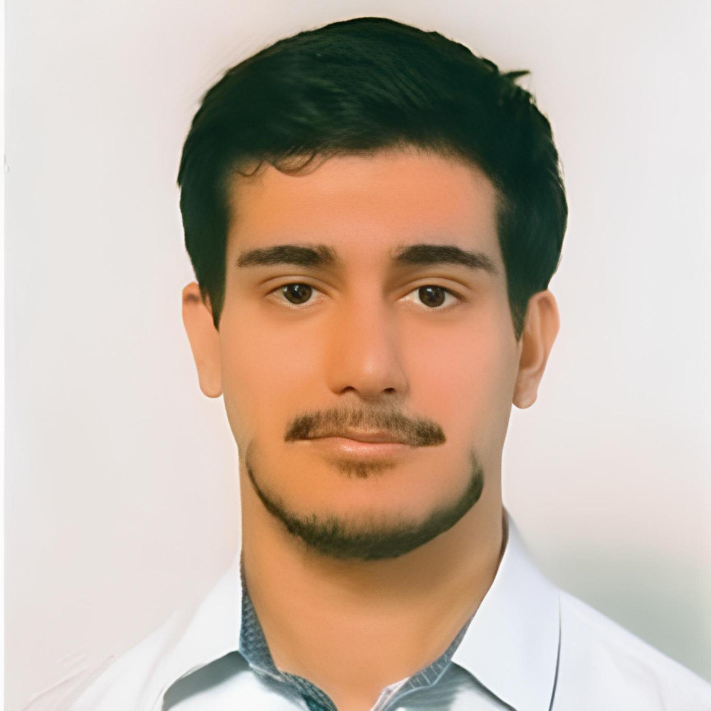

I am a Postdoctoral Researcher in the Department of Electrical and Computer Engineering at Auburn University, USA. My research lies at the intersection of advanced networking, online learning, and optimization, with a strong focus on designing energy-efficient and adaptive communication protocols.
Currently, my work explores Semantic Communications, cross-layer optimization (such as Meta-VIB), and the application of Multi-Armed Bandit (MAB) and Deep Reinforcement Learning (DRL) algorithms for reliable, resource-constrained IoT systems. I am also engaged in practical deployments, utilizing mathematical frameworks like Restless Multi-Armed Bandit (RMAB) models and computer vision pipelines for critical real-world applications, including pedestrian safety monitoring. Previously, my doctoral research focused heavily on adaptive protocols for the Internet of Underwater Things (IoUT).
I earned my Ph.D. in Information and Communication Technologies from the University of Palermo, Italy, in December 2025. I hold a Bachelor’s and a Master’s degree in Electronic and Telecommunication Engineering from the University of Catania. In 2023, my research was recognized with the prestigious Francesco Carassa Award by the Italian National Group on Telecommunications and Information Theory (GTTI) for the best presentation and publication.
My work broadly encompasses the theoretical design and practical implementation of adaptive networking systems. Key topics of interest include:
Email: anp0105@auburn.edu
Office: Shelby Center for Engineering Technology, 345 West Magnolia Avenue Auburn, AL 36849